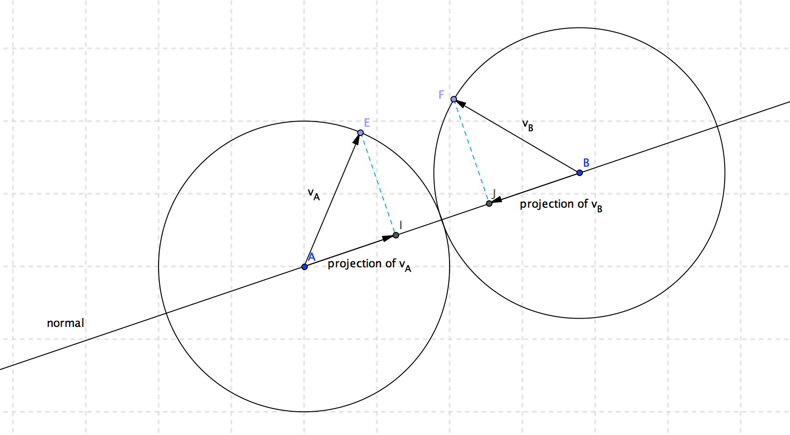
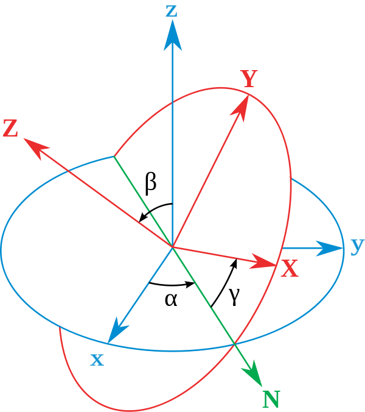
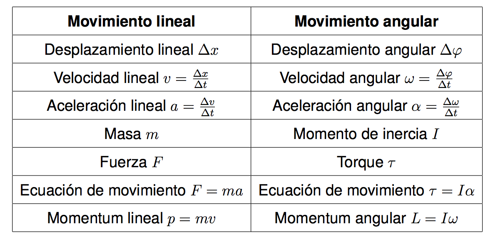
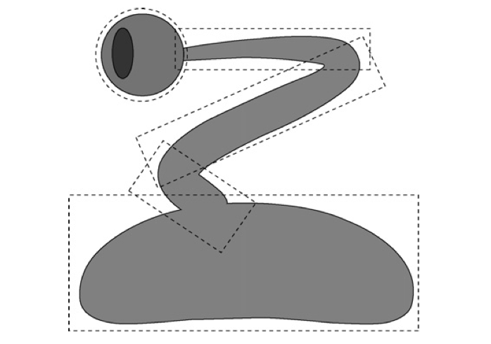
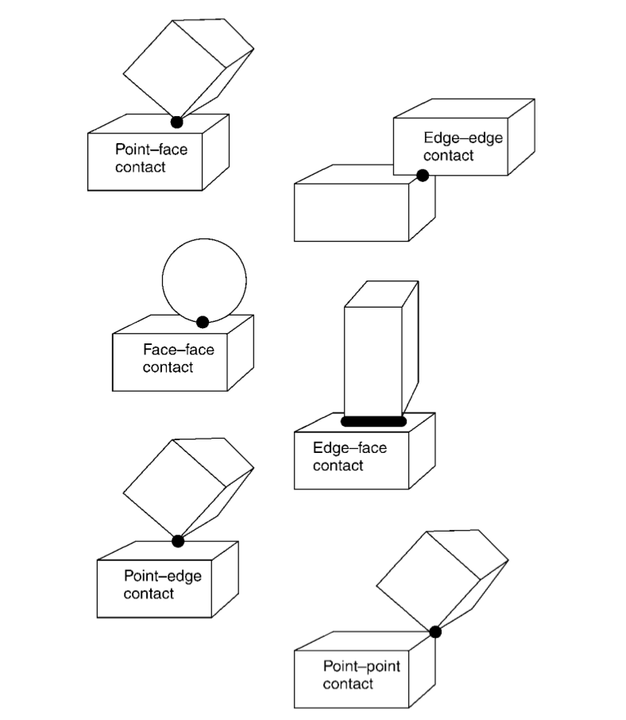
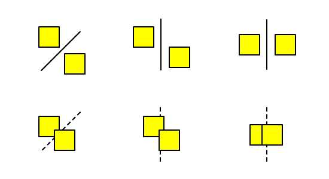

DISEÑO DE UN MOTOR DE SIMULACIÓN DE LA DINAÁMICA ENTRE
CUERPOS RIÍGIDOS ORIENTADO AL DESARROLLO DE JUEGOS
Presentado por: Mauricio Poppe
Tutores: Ing. Orlando Rivera
Ing. Mario Condori
Diciembre 2013
Perfil del proyecto de investigación
Planteamiento del problema
-
Evolución de JavaScript
- HTML5 Canvas
Planteamiento del problema
-
Motores de simulación física 3D Comerciales:
Havok, PhysX, CarX (AAA Racing Games), True Axis, Chrono
-
Motores de simulación física 3D Open Source:
Bullet, JigLib, Tokamak, Newton Game Dynamics,
Open Dynamics Engine
Planteamiento del problema
Motores de simulación física 3D existentes para la web:
Cannon.js
Justificación Teórica
- Reafirmación de bases matemáticas y físicas
- Ampliación de modelos existentes
- Aplicación de modelos existentes
- Base para futuros proyectos
Límites


Límites


Alcances
Fuerzas implementadas

Rotación en 3D

Observaciones
- Cuerpo rígido
- Forma de un cuerpo rígido
- Posición lineal y angular
- Velocidad lineal y angular
- Aceleración lineal y angular
- Masa
- Fuerza
- Torque
- Colisiones y contactos
Requerimientos funcionales
- Creación de objetos
- Creación de partículas
- Creación de cuerpos rígidos
- Agregación de características
- Masa, posición, velocidad, aceleración
- Registro de objetos
- Registro y acumulacion de fuerzas
- Registro y acumulacion de torques
Requerimientos funcionales
- Detección de colisiones
- Entre esferas
- Entre una esfera y un plano
- Entre cajas
- Entre una caja y una esfera
- Entre una caja y un plano
- Resolución de colisiones
Cálculo diferencial
Velocidad = cambio en la posición sobre un instante de tiempo
$$v = \frac{x' - x}{\Delta t} = \frac{\Delta x}{\Delta t}$$
Cuando $\Delta t$ tiende a cero:
$$v = \lim_{\Delta t \to 0} \frac{\Delta x}{\Delta t} = \frac{dx}{dt}$$
Aceleración = cambio en la velocidad sobre un instante de tiempo
$$a = \frac{dv}{dt} = \frac{d}{dt} \frac{dx}{dt} = \frac{d^2x}{dt^2}$$
Transformación de la aceleración y la velocidad
La aceleración es el cambio de velocidad instantáneo:
$$ a = \frac{dv}{dt} \leftarrow v'(t) = a(t) $$
Usando la segunda ley fundamental del cálculo:
$$ \int_{T_1}^{T_2} a(t) dt = v(T_2) - v(T_1) $$
Si la aceleración es constante y los tiempos son $T_1 = 0$ y $T_2 = T$:
$$v(T) = v(0) + aT$$
De la misma forma podemos expresar la velocidad:
$$ \int_{T_1}^{T_2} v(t) dt = x(T_2) - x(T_1) $$
$$x(T) = x(0) + v(0)T + \frac{1}{2}aT^2$$
Leyes de movimiento
Primera ley de Newton:
$$\sum{F} = 0$$
Segunda ley de Newton:
$$F = m * a$$
$$a = \frac{1}{m} * F$$
gravedad = aceleración constante
$$f = g * m,\;\; g = 9.81m/s^2$$
$$a = \frac{1}{m} * g * m = g$$
Todas las cantidades son representadas como vectores en el
motor de simulación:
$$\vec g = \begin{bmatrix} 0 \\ -g \\ 0 \end{bmatrix}$$
Características de una partícula
// caracteristicas de una particula
this.position = new APE.Vector3();
this.velocity = new APE.Vector3();
this.acceleration =
new APE.Vector3(0, -9.81, 0);
this.damping = 0.9;
this.inverseMass = 1.0;
// aceleracion -> velocidad
// velocidad -> posicion
Transformación de la aceleración
// v_f = v_o + a * t
this.velocity = this.velocity
.multiplyScalar(
Math.pow(this.damping, delta)
)
.add(
this.acceleration
.multiplyScalar(delta)
);
// x_f = x_o + v * t + a * t * t * 0.5
this.position = this.position
.add(
this.velocity.clone()
.multiplyScalar(delta)
)
.add(
this.acceleration.clone()
.multiplyScalar(delta * delta * 0.5)
);
Principio de D'Alembert
Alternativa a la segunda ley de Newton:
$$
\begin{eqnarray}
F = m * a && \text{Segunda ley de Newton} \\
F - m * a = 0 && \text{Forma alternativa de D'Alembert}
\end{eqnarray}
$$
Acumulación de fuerzas:
$$\vec f = \sum_i{f_i}$$
Integración en el motor:
$$a_{net} = a + \frac{1}{m} * \sum_i{f_i}$$
Algoritmo de integración
- Acumular fuerzas
- Fuerza = cambio en la aceleración
- Aceleración = cambio en la velocidad
- Velocidad = cambio en la posición
- Eliminar fuerzas acumuladas
Acumulación de fuerzas
// variable donde se acumulan las fuerzas
this.accumulatedForce = new APE.Vector3();
// metodo para acumular fuerzas
addForce: function (f) {
this.accumulatedForce
.add(f);
}
// Integracion
var resultingAcceleration =
this.acceleration.clone() // gravedad
.add(
// fuerza -> aceleracion
this.accumulatedForce.clone()
.multiplyScalar(this.inverseMass)
);
// aceleracion -> velocidad
// velocidad -> posicion
Detección de colisiones
cuerpos
CAJA NEGRA
contactos
- Cantidad de interpenetración
- Coeficiente de restitución
- Normal de contacto
Resolución de colisiones

Velocidad en el punto contacto
- Calcular la velocidad de separacion
- Distribuir la velocidad entre los cuerpos
- Distribuir la interpenetracion entre los cuerpos
Matrices de transformación en 2D
Matriz de rotación
$$
R_{2D} =
\begin{bmatrix}
\cos\theta & -\sin\theta \\
\sin\theta & \cos\theta
\end{bmatrix}
\begin{bmatrix}
x \\ y
\end{bmatrix} =
\begin{bmatrix}
x * \cos \theta - y * \sin \theta \\
y * \sin \theta + y * \cos \theta
\end{bmatrix}
$$
Matriz de escala
$$
S_{2D} =
\begin{bmatrix}
s_x & 0 \\
0 & s_y
\end{bmatrix}
\begin{bmatrix}
x \\
y
\end{bmatrix} =
\begin{bmatrix}
x * s_x \\
y * s_y
\end{bmatrix}
$$
Matriz de traslación
$$
T_{2D} =
\begin{bmatrix}
1 & 0 & t_x \\
0 & 1 & t_y \\
0 & 0 & 1
\end{bmatrix}\;
\begin{bmatrix}
x \\
y \\
1
\end{bmatrix} =
\begin{bmatrix}
x + t_x \\
y + t_y \\
1
\end{bmatrix}
$$
Orientación en 3D

$$R = \begin{bmatrix} \alpha & \beta & \gamma \end{bmatrix}$$
Matrices de rotación en 3D
Rotación alrededor del eje Z:
$$
R_Z =
\begin{bmatrix}
\cos\theta & -\sin\theta & 0 \\
\sin\theta & \cos\theta & 0 \\
0 & 0 & 1
\end{bmatrix}
$$
Rotación alrededor del eje Y:
$$
R_Y =
\begin{bmatrix}
\cos\theta & 0 & \sin\theta \\
0 & 1 & 0 \\
-\sin\theta & 0 & \cos\theta
\end{bmatrix}
$$
Rotación alrededor del eje X:
$$
R_X =
\begin{bmatrix}
1 & 0 & 0 \\
0 & \cos\theta & -\sin\theta \\
0 & \sin\theta & \cos\theta
\end{bmatrix}
$$
Correspondencia entre ecuaciones de movimiento lineal y angular

Movimientos Angulares
Velocidad angular: eje de rotación $\widehat a$ y radio de cambio $r$:
$$\omega = r * \widehat a$$
Cambio en la velocidad angular:
$$\omega' = \omega + \omega_{new} = \omega + \alpha * \Delta t$$
Cambio en la orientacion:
$$\varphi' = \varphi + \frac{\Delta t}{2} * \omega * \varphi$$
Omega para la ecuación anterior es el cuaternion:
$$\omega = \begin{bmatrix} 0 \\ \omega_x \\ \omega_y \\ \omega_z \end{bmatrix}$$
Torque
$$\tau = r \times F = |r||F| \sin \theta$$

Acumulador de torque
...
this.accumulatedTorque = new APE.Vector3();
addForceAtPoint: function (f, point) {
// vector del centro de masa al punto de aplicacion
var pt = point.clone().sub(this.position);
this.accumulatedForce
.add(f);
this.accumulatedTorque
.add(pt.cross(f));
}
Consideraciones acerca de la geometría de los objetos

Tipos de contacto

Algoritmos de colisión
Entre esferas:
$$
colision =
\begin{cases}
verdadero & \text{si } r_1 + r_2 >= d \\
falso & \text{de cualquier otra manera}
\end{cases}
$$
Entre una esfera y un plano:
$$
colision =
\begin{cases}
verdadero & center * \widehat n - planeTranslation < radius \\
falso & \text{de cualquier otra manera}
\end{cases}
$$
Entre dos cajas:

Separating Axis Theorem
Algoritmo para encontrar el impulso a ser aplicado
-
Calcular las coordenadas relativas al contacto
con el eje $X$ paralelo a la normal de contacto
-
Calcular el cambio de la velocidad por unidad de impulso
-
Calcular el impulso para generar ese cualquier cambio en la velocidad
-
Calcular la velocidad final despues del contacto.
-
Calcular el impulso para generar ese cambio en la velocidad.
-
Dividir el impulso en componentes lineares y angulares.
Conclusiones
- Modulo de integración (euler) - OBJ.1
- Modulo de registro de fuerzas - OBJ.2
- Modulo de detección y resolución de colisiones - OBJ.3
- Realización de prototipos - OBJ.4
- Enlazados cumplen el objetivo general:
Diseñar un motor de simulación de la dinámica
entre cuerpos rígidos orientado al desarrollo de juegos.
Recomendaciones
-
Complementar el motor con nuevas clases
generadoras de fuerza
-
Implementación de otros metodos numericos de integracion
-
Consideración del rendimiento y la estabilidad a la hora
de implementar el motor de simulación
-
Implementacion de BSP y Octrees
-
Adición de nuevos algoritmos de detección de colisiones
(polígonos tridimensionales concavos y convexos)